Appendix B
CONTRA DANCE FIGURES
Allemande left (right): Two dancers take left (right) hands and walk around one another, pulling slightly on one another's arms to facilitate the turn. The grip is not the one we use to shake hands, but is a grip with the thumb pointing upward, with which it is possible to exert tension more effectively. "Once around" means that the dancers walk completely around one another and back to where they started. Fractional turns are measured in relation to this. A handy hand allemande means that as one couple goes between the other, they allemande with the nearest hand, the dancers on one side of the set using the opposite hand from the dancers on the other side of the set:

Balance: The balance has many variations, but the most common one is a move performed by stepping on the left foot and kicking up the right (or vice versa), and then stepping on the right foot and kicking up the left (or vice versa), in a four count sequence. The balance is found in three settings in contra dance: two dancers may take one hand or both and balance facing one another, usually preceding a swing; four dancers may take hands in a circle and balance together; or four dancers may take hands in a wavy line (adjacent dancers facing opposite ways) and balance together:
Box the gnat: This is a figure borrowed from western square dance, and is a means by which two dancers change places. The two dancers face one another and take right hands; the woman turns and backs under the man's right arm while the man crosses to her place, turning to face back the way he came; the dancers end the move each occupying the original place of the other:

California twirl: This figure is similar to "box the gnat" in that two dancers use it to change places. But it is different in that the dancers begin and end the move standing side by side instead of facing one another, and the man takes the woman's left hand in his right. The woman walks under the arch made by their joined hands, while the man walks around her to his right to change places, with the end result that the dancers are still side by side, but facing the opposite way (Country Dance and Song Society Newsletter 95 [1990]:8):
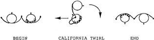
Figure 32. California Twirl
Cast off (or around): The cast off is a figure commonly used to accomplish the progression in a contra dance, especially in the more traditional dances. Actives couples stand between the inactives and either take inside hands or put their nearest arms around these inactives, and turn with them, ending up below the inactives in the set. Casting around another couple generally means that the actives turn to the outside of the set and walk out and around the inactives:
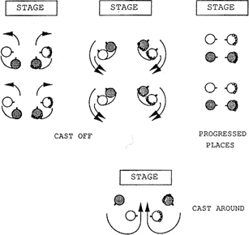
Figure 33. Cast Off and Cast Around
Circle left (right): Four dancers (or six in triple formation) take hands in a circle and walk to the left (right) one full turn and back to place. Fractional circles involve turns of more or less than one full turn:
Contra corners: Contra corners is a traditional figure in which the active couple performs a series of allemandes with the couples on either side of them, and with each other. To begin contra corners the active couple allemandes right with each other in the center of the set, and then each of them allemandes left with the person across the set to their right diagonal; the actives then return to the center and allemande right with each other again, and then allemande left with the person across the set and to their left diagonal. (Note that each inactive person is turned by two different active dancers, one from each side.) This completes the contra corners, and the active couple will usually come together again in some fashion as they finish the figure:
Courtesy turn: The courtesy turn is a way in which a couple turns around halfway, usually following a half ladies chain or a half right and left through. The man takes the woman's left hand in his own left hand and places his right arm around her waist, taking her right hand at the right side of her waist. In this position the couple turns together one hundred and eighty degrees. Today's contra dancers often dispense with the courtesy turn and accomplish the turn with a twirl instead (see "twirl"):

Dosido: The basic dosido figure is executed by two dancers who pass right shoulders with one another, pass back to back, and back up passing left shoulders and returning to place. A mirror dosido is one in which the dancers on one side of the set begin the dosido passing right shoulders, and the dancers on the other side of the set begin the dosido passing left shoulders. In modern contra dance choreography it is common to do a "dosido once and a half," which means that the dancers complete the basic dosido figure and then pass right shoulders again, moving past one another, often to swing someone else. Many of today's contra dancers like to twirl themselves around as they do the dosido:

Down the center and back: Active couples go down the center and back while the other dancers watch. The dancers may turn individually before returning up the hall, or they may turn as a couple. The caller will usually specify which way to turn, since the method of turning affects the dancers' positions for the next figure:

Figure 38. Down the Center and Back
Down the outside and back: This figure is traditionally performed by the active couples, who turn away from the center of the set and walk down the outside of the set, and then turn and come back to place:
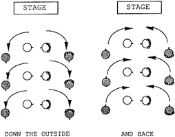
Figure 39. Down the Outside and Back
Down the hall four in line: The four dancers in a minor set all walk down the hall together in a line of four. Usually the active couple is in the middle, but not necessarily. The caller will specify whether the four dancers should turn individually or as couples before coming back up the hall, since the method of turning affects their positions for the next figure:
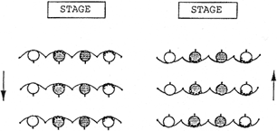
Figure 40. Down the Hall Four in Line and Back
Figure eight: This figure is usually executed by the active couples around the inactive couples. While the inactives stand still, the actives walk around them in a figure eight pattern. Both a whole figure eight and a half figure eight are common in contra dances. Often the inactives will move slightly to facilitate the movement of the actives:
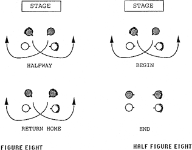
Figure 41. The Figure Eight
Four-leaf clover: This figure is from square dancing, and is performed by four dancers. It begins with dancers taking hands in a circle. Two dancers walk under the arch made by the joined hands of the other two, and then turn back to back bringing their own joined hands over their heads and into the center of the circle:
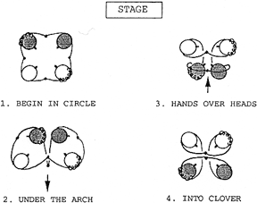
Figure 42. The Four-Leaf Clover
Grand right and left: This figure is used only rarely in contra dance, and is from the square dance tradition. In a contra dance it is usually executed around the large circle formed by the two sides of the set, joined at each end. Dancers walk around the circle taking right hands and then left hands alternately with successive dancers as they pass:
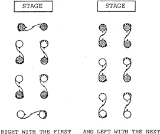
Figure 43. The Grand Right and Left
Gypsy: The gypsy is a figure borrowed from English country dance. It is done by two dancers, and may be done either to the right or to the left. The two dancers circle, facing one another and without touching one another, and eye contact is maintained continuously:
Hey for four: This weaving figure has been borrowed from English country dance and is now quite popular in contra dances. Four dancers weave around one another without touching. Two dancers begin the figure by passing right (or sometimes left) shoulders, and the dancers continue to pass right shoulders in the center of the set and left shoulders at the sides (or vice versa) until they have returned to place. Some new dances include fractions of heys, and also heys on the diagonal. The contra dance hey differs from the English country dance hey in that it is done in a smaller space and does not have the expansive elegance given to it in the English country dance tradition:
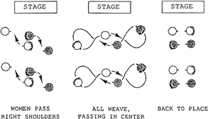
Figure45. The Hey for Four
Ladies chain: The two women take right hands and cross the set, where they are turned with a courtesy turn by the man on the opposite side. The women then take right hands again and cross back to place, where they are once again turned, this time by the man on their original side. This figure is often performed only half way (across the set) without the return. Many of today's dancers like to use twirls in place of the courtesy turns. There are newly composed dances that include chains for the men instead of the women:
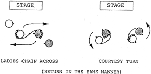
Figure 46. The Ladies Chain
Long lines forward and back: Dancers take hands along the sides of the sets, and the two long lines walk four steps toward each other, and then four steps backwards to place:
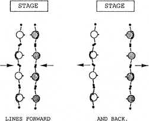
Figure 47. Long Lines Forward and Back
Pass through: This figure is performed by two couples who pass by one another as they walk in opposite directions. The dancers on the right (usually the women) walk in between the dancers approaching. This figure may be done up or down the set or it may be done across the set:
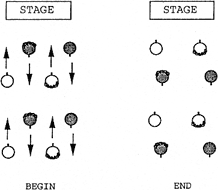
Figure 48. The Pass Through
Promenade: The two couples in the minor set walk across the set in promenade position passing one another, and then turn into the place vacated by the other couple. The promenade hold varies regionally:
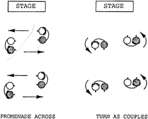
Figure 49. The Promenade Across
Pull by: Two dancers take hands and pull by one another going opposite directions. This figure may use the right hand or the left hand depending on its context, and it may occur along the set or across the set:
Right and left through: Two dancers on one side of the set change places with two dancers on the other side of the set by passing through (passing right shoulders with the dancer directly opposite) to the other side, and doing a courtesy turn; then in like manner the two dancers pass through again and return home to another courtesy turn. The "right and left through" is often done only halfway, without the return:
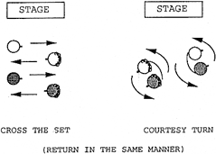
Figure 51. The Right and Left Through
Slide: This term simply refers to a movement to the right or left, usually no more than one or two steps. One common use of the slide is in the balance in a wavy line, when after one balance the dancers slide one place further down the line and balance again. Another common use is when a couple moves together down the side of the set to circle with a new couple:
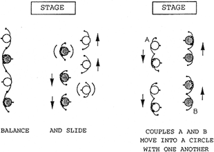
Figure 52. Two Kinds of Slides
Star: The star left (right) is performed by four dancers, who place their left (right) hands together in the center of their little circle and walk around counter-clockwise (clockwise). The hand hold used will vary regionally, the most common holds being the handshake hold with the person opposite in the star, and the wrist hold in which every dancer takes the wrist of the dancer ahead. To star once around brings one back to where one started. Fractional stars are also used in contra dance:
Swing: The swing is performed by two dancers, who most commonly hold one another in ballroom position (the woman's left hand behind the man's upper right arm, and his right hand on her lower back, their other hands joined), and turn clockwise together. A walking step may be used with the swing, but the buzz step is more popular in modern contra dance. The buzz step is a scooting motion in which the dancers' right feet stay close to their center of gravity, while their left feet scoot them around in a tight circle. Dancers lean back slightly as they swing, "giving weight" (see Dancing Style below). There are alternate holds for the swing, particularly for same-gender swings. When a man and a woman swing, the swing ends with the woman standing to the right of the man:
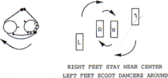
Figure 54. The Buzz Step Swing
Twirl: The twirl is not a contra dance figure, but it is a popular variation used in place of the courtesy turn in the ladies chain figure. Instead of the man putting his right arm around the woman and turning around with her, he takes her left hand in his and she turns clockwise under his raised left arm, revolving one or more times, while he turns counter-clockwise in place, guiding her all the way around him and facing her as she goes. Another kind of "twirl" happens when dancers turn themselves around solo as they execute a dosido or a hey for four: